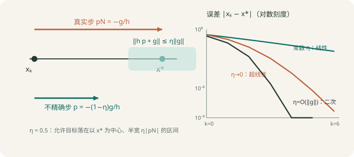

7.1.1 不精确牛顿法的局部收敛：forcing 项如何决定收敛阶
牛顿法每步精确求解 ∇²f(xₖ)pₖ=−∇f(xₖ)。大规模问题里这个线性系统太贵，于是只要求相对残差 ‖H(xₖ)pₖ+g(xₖ)‖ ≤ ηₖ‖g(xₖ)‖。本文说明 forcing 项 ηₖ 如何把收敛阶锁定为线性、超线性或二次，并给出可复现的一维算例。
精确求解为什么太贵
考虑无约束问题 minimize f(x)，x∈ℝⁿ，f 二阶连续可微。记梯度 g(x)=∇f(x)、Hessian H(x)=∇²f(x)。牛顿步由精确求解线性系统得到，pᴺₖ=−H(xₖ)⁻¹g(xₖ)。
若 H 稠密，一次对称分解约 O(n³) 次运算、O(n²) 内存；对稀疏 H，填充也会让代价迅速上升。大规模问题里，把牛顿方程解到底既不划算也不必要。实用做法是只要求解出一个相对残差足够小的近似步，这就是不精确牛顿法。
设 pₖ 是实际使用的步，定义残差 rₖ=H(xₖ)pₖ+g(xₖ)。不精确牛顿条件要求残差相对梯度足够小：
ηₖ 称为 forcing 项。它是代价与精度的旋钮：ηₖ 越小，pₖ 越接近真实牛顿步，内层迭代越贵；ηₖ 越大，内层越省，但外层收敛越慢。下面把这种取舍精确化。
forcing 项与收敛阶
Theorem 7.1 的结论（局部）。设 ∇²f 在解 x* 处 Hölder 连续、∇²f(x*) 非奇异，且迭代点 xₖ→x*。则：
（1）若 ηₖ ≤ η < 1（常数上界），{xₖ} 线性收敛；（2）若 ηₖ → 0，{xₖ} 超线性收敛；（3）若 ηₖ = O(‖g(xₖ)‖)，{xₖ} 二次收敛。
直觉来自误差递推。记 Eₖ=‖xₖ−x*‖。把不精确步代回，误差满足
第一项 ηₖEₖ 是“没有把线性系统解到底”留下的误差，第二项 CEₖ² 才是不精确牛顿法本身继承的二次项。常数 η 让第一项主导，于是收敛是线性的；让 ηₖ→0 抑制第一项，于是超线性；让 ηₖ 与 Eₖ 同阶，则第一项也变成二阶小量，二次项重新主导，于是二次收敛。
需要强调：这是一条局部结论。它假设 xₖ 已进入 x* 的吸引域，并未说明从任意起点都能收敛。
容差带的几何
在一维情形下不精确条件有一个干净的几何解释。令 h=H(xₖ)、pᴺ=−g/h。因为 h p+g=h(p−pᴺ)，条件 |h p+g| ≤ η|g| 等价于 |p−pᴺ| ≤ η|g|/h = η|pᴺ|。
也就是说，所有可接受的不精确步 p 都落在真实牛顿步 pᴺ 周围、相对半宽为 η 的区间 [pᴺ−η|pᴺ|, pᴺ+η|pᴺ|] 内。换成位置就是：下一个迭代点 xₖ₊₁ 必须落在以 x* 为中心、半宽 η|pᴺ| 的区间里。η 越大，允许的落点越宽，内层求解越容易，但离 x* 也越远。
一维容差带：可接受的不精确步必须落在真实牛顿步 pᴺ 周围、相对半宽为 η 的区间内，等价于 xₖ₊₁ 落在以 x* 为中心、半宽 η|pᴺ| 的区间内（此处 η=0.5）。

一维可复现算例
取 f(x)=x²/2+x³/6，则 g(x)=x+x²/2、h(x)=1+x。x*=0 是驻点，且 h(0)=1 非奇异（另一个驻点 x=−2 满足 h(−2)=−1<0，是局部极大）。按下式构造满足容差条件的步：
xₖ₊₁ = xₖ − (1−ηₖ) g(xₖ)/h(xₖ)。
从 x₀=0.5 出发，三种 forcing 项得到的误差收缩如下（数值由随附程序计算，均为教学示意）：
（1）ηₖ=0.5（常数）：收缩比从 0.556 降到 0.503，趋于 0.5，对应线性收敛；（2）ηₖ=0.5^(k+1)（趋于零）：收缩比从 0.335 降到 0.0078，对应超线性收敛；（3）ηₖ=0.5|g(xₖ)|（O(‖g‖)）：eₖ₊₁/eₖ² ≈ 1，对应二次收敛。
三组序列用了同一个一维玩具问题，目的只是把定理的三种情形区分开；它不是对任何真实大规模问题的性能测量。
交互：forcing 项如何改变收缩比
固定一维问题 f(x)=x²/2+x³/6 与起点 x₀=0.5，用滑块选择常数 forcing 项 η，并切换 forcing 计划（常数 / 趋于零 / 与梯度同阶）。面板实时跑若干次迭代，报告末步收缩比与判定出的收敛阶。
实时迭代检查
计划取值：0 = 常数 η；1 = η·0.5^(k+1)（趋于零）；2 = η·|g(xₖ)|（与梯度同阶）。拖动时观察：常数计划下收缩比停在 η 附近，趋于零计划下持续变小，同阶计划下误差每步平方。
Python：重现三种收敛阶
下面的程序只依赖标准库。它在同一个一维问题上分别用常数、趋于零、与梯度同阶的 forcing 项跑不精确牛顿法，并断言三组误差序列分别呈线性、超线性与二次收缩。
"""Inexact Newton on f(x)=x^2/2+x^3/6: the forcing term sets the convergence order."""
def grad(x):
return x + x * x / 2
def hess(x):
return 1.0 + x
def inexact_newton(x0, eta, steps):
"""eta(k, g) returns the residual factor; the step satisfies h*p + g = eta*g."""
x, errors = x0, []
for k in range(steps):
gk, hk = grad(x), hess(x)
x += -(1.0 - eta(k, gk)) * gk / hk
errors.append(abs(x))
return errors
def ratios(errors):
return [errors[i + 1] / errors[i] for i in range(len(errors) - 1) if errors[i] > 1e-16]
constant = inexact_newton(0.5, lambda k, gk: 0.5, 7)
vanishing = inexact_newton(0.5, lambda k, gk: 0.5 ** (k + 1), 7)
quadratic = inexact_newton(0.5, lambda k, gk: 0.5 * abs(gk), 6)
if __name__ == "__main__":
assert 0.55 > ratios(constant)[-1] > 0.45
assert 0.02 > ratios(vanishing)[-1]
assert all(1.1 * quadratic[i] ** 2 >= quadratic[i + 1] for i in range(1, 5))
assert 1e-15 > quadratic[-1]
print("constant eta=0.5 ratios", [round(r, 3) for r in ratios(constant)])
print("vanishing eta=0.5^(k+1) ratios", [round(r, 4) for r in ratios(vanishing)])
print("quadratic eta=0.5|g| ratios", [f"{r:.2e}" for r in ratios(quadratic)])
print("quadratic e[k+1]/e[k]^2 ", [round(quadratic[i + 1] / quadratic[i] ** 2, 3) for i in range(1, 5)])程序只跑一个固定的教学算例，用误差的收缩比区分三种收敛阶；它不是 Newton–CG 求解器，也不覆盖线性系统的不精确求解过程、内层停止准则或数值稳定性。
这一页的边界
本页只讨论局部收敛：结论都假设 xₖ 已进入 x* 的吸引域且 ∇²f(x*) 非奇异。它不说明从任意起点都能收敛，也不给出内层线性系统应该用什么迭代、如何选择停止参数。把 ηₖ=O(‖gₖ‖) 直接当成实现建议也是过度解读：二次收敛是渐近结论，而实际启发式 forcing 项要在代价与精度之间折中。全局化与 Newton–CG 的具体实现将在 7.1.2–7.1.3 展开。